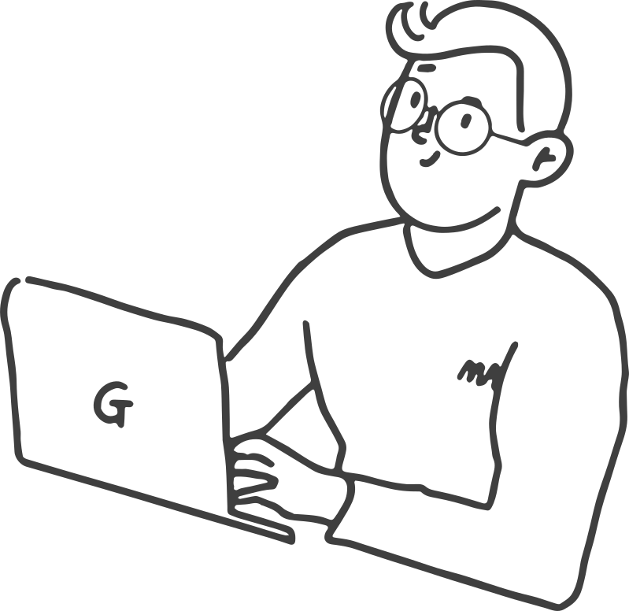

G-ARCH PROJECT

저는 피읖입니다. IT일을 하고 있고요, 그 중에서도 웹 개발을 하고 있습니다. 그 중에서는 또 백엔드 엔지니어고요. 예, 뭐 서버에서 데이터가 왔다갔다, 그런걸 하고 있습니다. 저는 건축학과를 다니다가 이건 아니다 싶어서 컴퓨터 공학을 복전을 해서 학교를 6년 다녔어요. 졸업하자마자 헐레벌떡 급하게 취업해서 이제 곧 다닌지 1년이 되는 그런 새내기 개발자입니다.
건축을 하다가 이건 아니다 싶어서 컴공을 복전을 하셨어요. 뭐가 그렇게 아니었길래…
너무 서러운 스토리가 있어요. 제가 3학년때, 그러니까 2018년이었어요. 그때 설계 과제가 건물 여러채를 엮어서 설계하는 과제였어요. 이 과제를 하면서 제가 중심적으로 생각한 로직을 여러 채에 적용을 했어요. 그러니까 디자인적으로는 좀 비슷해 보일 수 있죠. 하지만 전 저의 주제가 아주 일관적이고 뚜렷해서 강한 로직이 다양한 땅과 조건에 어떻게 반응하는지 보여줄 수 있다고 생각을 했어요.
몇년전에 피읖님이 SNS에 올렸던 걸 봤던 거 같아요.
그런데 제가 발표할 순서가 됐을 때는 이미 시작한지 3시간 정도 지났을 때에요. 원래 10분이 발표시간인데 교수들도 다 10분컷을 안하고 진행을 한거죠.
그렇죠, 초반에 체력있을 때는 자세히 듣고 피드백도 많이 주다가 뒤로 가면 시간에 쫓겨서 대충보고 피드백도 대충 주고 그런 경우가 비일비재 하죠. 문제에요.
시스템 적으로 문제가 많았어요. 게다가 이때 3학년 헤드 교수가 기분파이기도 했어요. 그러니까 제 차례가 됐을 땐 이미 짜증과 피곤이 올라왔을 때에요. 그래서 제걸 보면 건물 자체가 화려하지는 않거든요. 그러니까 교수가 보자마자 “야, 너는 무슨 업자냐” 이런 얘기를 하는거에요. 최종 크리틱이었는데. 처음에 그러고 나니까 그 뒤로 다른 교수들도 아무말도 안하는거죠.
한 학기가 5분도 안되서 그렇게 끝났네요.
갑자기 무슨 싸구려 오디션 프로그램처럼 독설만 갈기고 끝나버린거에요. 그리고 끝나고 3학년 회식이 있었어요. 좋은 데 갔다고 하더라고요. 너무 속상해서 안갔어요. 그냥 방에 엎드려 있었죠. 계속, 이건 좀 아닌 거 같은데. 하면서요. 그땐 뭐가 아닌지는 잘 모르겠지만 아무튼 뭔가 계속 그냥 아니었다고 생각했어요.
그 헤드교수가 아니었던 것도 있고, 다른 교수들도 아니었고, 되게 많은 게 아닌 것도 있었죠.
담당 교수가 나에 대해 전혀 커버를 쳐주지 않기도 했고, 그런 상황이 그때는 싫었는데 지금 생각해보면 평가 기준이 명확하지 않은게 너무 싫었던 것 같아요.
뭔가 한마디에 분위기가 휩쓸리기도 하고요.
그러면서 내가 이 일을 잘 할 수 있을까, 하는 생각이 커진거죠. 집에서 이런 얘기를 했어요. 저희 엄마가 계속 IT쪽 일을 30년 째 해오셨어요. 엄마가 건축쪽으로 돈 못 벌겠으면 IT쪽도 한번 생각해보라 해서 이렇게 된거에요. 살면서 엄마가 나한테 뭘 해라 말아라 얘기한 적이 없었는데, 그런 얘기를 하기 시작한거죠. 그래서 어? 나도 컴퓨터 공부를 해볼까? 하는 생각을 하게 됐어요. 뭐 그때까지는 IT를 한다는 생각은 없었고, 라이노 그래스호퍼. 그걸 재밌게 했었어요. 컴포넌트를 짜면 3D 입체도 만들고 그 안에서 로직도 짜고 하는거잖아요. 그런 쪽으로 해볼 수 있지 않을까.
아 그럼 처음에는 IT쪽으로 완전히 간다라기보다는 컴퓨터 툴 기반으로 건축을 생각했던거네요.
맞아요. 디지털 디자인이라고도 하는 그런쪽으로 갈 수 있지 않을까 생각을 했던 거 같아요. 그래서 건축학과 졸업작품을 할 때 그래스호퍼를 붙잡고 아무도 토달 수 없는 최적의 디자인을 하겠다 하면서 며칠을 컴퓨터를 돌려서 건물 형태를 잡기도 했어요. 그리고 그 건물에서 사용된 에너지를 시뮬레이션을 한걸 모형으로 만들어내는 작업을 했어요. 제 패널을 알고리즘에 대한 설명이랑 각종 시뮬레이션 결과에 대한 설명으로 꽉 채웠는데 너무 만족스럽고 재미있었어요.
3학년의 설욕을 되갚은 기분도 들 거 같아요. 그런데 지금은 그런 과정들을 또 지나서 개발자의 삶을 살고 있어요. 완전히 그렇게 가게 된 이유는 어떤가요?
일단 개발 쪽이 시장이 되게 커서 계속 티오가 계속 생겨요. 그런 이유도 있고, 이 디지털 디자인 쪽은 시장이 아직 너무 없다고 봤어요. 없다기보다는 너무너무 작아서 한국에서 내가 디자인을 하기보다는 내가 이 툴을 배워서 남들을 교육시키는 정도까지만 할 수 있는 거예요. 그런데 교육 쪽으로 나가고 싶진 않았고요. 제 눈에는 사람을 구하고 있는 회사도 잘 안보이고, 제가 더 쉽게 접할 수 있는 정보를 따라가다보니 가장 큰 개발자 시장에 나오게 됐어요
6년동안 학교 다니면서 건축도 공부하고 컴퓨터 공학도 공부하면서 바빴을 꺼 같아요. 건축을 공부한 게 지금 일하는 것에 어떤 영향이 있는 것 같나요?
일을 하는 방법인 거 같아요. 커다란 일을 진행할 때 잘게잘게 쪼개가지고 일을 쳐내고 또 일을 줄이고, 내가 어디까지 포기할 수 있는 지를 가늠을 해서 시간엄수하는 거, 그걸 제가 잘했거든요.
매주 크리틱을 하고 마감을 했던 경험들에서 나온 건가요?
저는 마감 시간 칼같이 지키는 편이었어요. 부족한 부분이 있더라도, 마감의 요건을 맞춰서 마감을 하는 편이었어요. 그랬는데, 여기 오니까 일이 되게 산발적으로 터져요. 저는 여기서 홈페이지를 운영하는 일을 최근에 맡아서 하고 있는데, 여기 저기서 뭐 해달라고 하는 일들이 갑자기 터지는거죠. 그럼 여기서 우선순위를 정하고 다른 사람한테 도와달라 하는 부분을 나누고 해야하는데, 이런 걸 건축을 하면서 잘 배웠던 거 같아요.
배우기도 했고 자연히 체화하기도 했고요.
기술적인 건 딱히 겹치는 부분은 없는 거 같아요. 아, 한번씩 교육같은 걸 하거나 프리젠테이션할 때 ‘프리젠테이션 잘하시네요’이런 말을 듣기도 하고요.
매주 자기 PR을 하고 매주 PPT를 만들던 뭔가 발표를 계속 하는 삶을 지냈어서 그런가보네요. 건축사무소에서 인턴을 한 적도 있나요?
인턴을 일주일 했다가 잘렸어요.
이건 또 무슨 일이에요. 건축만 들어가면…
되게 좋아하던 교수님이었거든요. 인턴 좀 해볼래? 해서 갔는데, 교수님과 나. 둘뿐인거에요. 그러니까 저한테 공모전을 A부터 Z까지 다 맡겼어요. 안 그래도 못하겠는데 연휴가 있었어요. 그래서 연휴는 쉬어야하니까, 일정을 연휴 빼고 잡았더니, “연휴 때 출근 안하려고?”하면서 고민을 하시더라고요? 그러더니 “네가 아직 프로페셔널한 경험이 부족한 것 같아”라고 하면서 여기까지만 하자고 하시더라고요.
암요. 프로라면 공휴일에 나와야지. 그게 프로패셔널한거지. 아이고. 정말 아마추어셨네요. 그 교수님.
그것도 있고 월급도 최저에 한참 못미치기도 하고. 너무 화가 나서 막 잠도 안오고 그랬어요. 지금 생각해보니 이런 경험 저런 경험들이 누적돼서 건축을 해야하나? 하는 생각을 계속 하게 됐던거 같네요.
건축이, 그 건축 자체가 나와 잘 맞지 않아서, 내가 좋아하지 않아서 지금 일을 했다기 보다는 건축을 둘러싸고 있는 환경, 업무 환경이라던가 건축을 하는 사람들의 어떤 모습들이 영향이 더 컸던 거 같아요.
이제 피읖님의 게이적인 삶 혹은 퀴어적인 삶에 대해서 좀 얘기를 해보고 싶어요.
질문지를 받고 되게 게이와 퀴어 사이에 이렇게 선을 쫙 그어가지고.
제가 좀 진하게 그어서 드렸죠.
저를 저 퀴어 저편에 딱 던져놓고 너 게이 아니고, 너 퀴어게이다. 이렇게 말하는 그런 느낌이 들었어요. 좀 웃겨서 친구들이랑 돌려보면서 조금 웃었어요.
그럼 그런 느낌으로 평소와 조금 다르게 질문을 해볼게요. 성정체성, 성지향성이 어떻게 되시나요?
저는 시스젠더 남성의 호모 섹슈얼 그리고 모노가미인데요. 게이에요 게이.
제가 또 어쩌면 실수를 하고 있진 않았을까 그런 생각을 했어요. 애인이 남자로 보이기도 하니까. 근데 또 모르는거니까. 그럼 게이 커뮤니티에 나온 처음 나오게 된건 언제였어요?
저는 시작을 퀴어 커뮤니티로 했는데요.
굳이 나눠서 말하자면
게이 커뮤니티는 지아키가 처음이고. 2016년에 퀴퍼를 처음 갔었어요. 퀴퍼에 혼자가기는 아는 사람도 없고 너무 무서운거에요. 가면 막 토마토 맞을 거 같고 가서 뭘해야하는지도 모르겠고 그래서 갈 엄두가 안나고 인터넷을 보는데 퀴퍼 자원봉사자를 모집을 하는거에요. 그 중에 퀴퍼 애프터 파티에 안전요원을 모집 한다길래, 그러면 퍼레이드 말고 애프터 파티를 가봐야겠다 해서 처음 가게됐죠.
신기한 첫 시작인 거 같아요. 혼자가기 무섭고 어렵고 그래서 아예 냅다까라 자원봉사자로 인권수행하러 가는.
나 완전 수행하러 갔잖아.
근데 그것도 되게 좋은 방법이네요. 처음에 솔직히 갑자기 이쪽 친구가 어떻게 있겠어요. 하지만 궁금하잖아. 그럼 그런방식으로 가는 경우도 있겠네요. 좋네요.
맞아요. 그때 프라이빗 비치 티셔츠 나눠주고 그랬어요. 근데 작아서 못입구… 집에 일단 가져는 왔죠.
인권이 또 부족했네.
그러니까 어디 다양성 커버하겠다고. 어쨌든 저녁 때부터 모여서 저는 안내팀의 세큐리티 역할이었고. 무대가 있어서 무대에 드랙퀸도 올라오고 고고보이도 올라오고 레즈비언 댄스팀도 올라오고. 프로그램도 엄청 짜여져 있고. 아무튼 뭔가 대단했어요. 자원봉사자들은 사전에 어떤 공연 타임은 일을 하고 몇 타임은 좀 쉬고 이렇게 나누는 게 있었어요. 정하는 와중에 혹시 퀴어 행사 처음 나와본 사람 이렇게 손을 들라고 하는거에요. 그때 이제 손을 들었더니 그럼 혹시 게이세요? 이렇게 물어보는 거예요. 그래서 네 게이입니다 이랬더니 그러면 고고보이 무대 때 안전 요원 하시면 되겠다.하면서 고고보이 타임에 넣어줬어요. 나를.
배려심이 있는 거에요.
그래서 티켓 확인하는 역할을 하면서 고고보이 무대를 좀 얼핏 얼핏 봤던 것 같아요.
근데 사실 그거보다 더 강렬하게 기억에 남았던 건 따로 있었어요. 모든 공연이 끝나고 디제잉만 계속 이어지는데 자원봉사자들한테도 알아서 가서 노세요 하는거에요. 그래서 맥주를 마시면서 무대를 보는데 그 무대 한가운데서 아마도 레즈비언 분들이 너무 막 현란하게 춤을 멋있게 추는 거예요. 그걸 봤던 기억이 되게 강렬하게 남았어요. 그리고는 집에 오려고 택시를 잡고 있는데 저쪽에서 여자-여자 커플이 되게 진하게 키스를 하고 있는 거예요. 깜짝 놀랐잖아요.
이게 뭐지? 키스는 걔네가 하는데 내가 프라이드가 차는 거야. 이게 해방인가 보다 이러면서 새벽 4시가 넘어서 집에 오는 택시에서 되게 막 가슴이 두근두근하면서 쿵덕쿵덕하면서 왔던 기억이 나요.
오늘 나는 엄청난 경험을 하고 집에 왔구나.
맞아. 처음 해방을 경험했어. 약간 이러면서.
저도 처음 경험했을 때가 떠올라요. 저는 클럽으로 처음 경험했는데, 그때 거의 아침에 들어왔어요. 그때 느낀게, 오늘 너무나도 내 인생에서 중요한 날이다. 오늘 나는 되게 정말 중요한 경험을 한 날이다. 이런 생각을 했죠.
저는 또 2019년 퀴퍼 생각나요. 그때 하루 전날에 핑크닷 행사 했었잖아요. 아마 20주년? 그래서 했던 걸로 기억하는데, 퇴근하고 갔던 기억이 납니다. 아마 금요일이었을꺼에요 퀴퍼 전날이니까. 저녁에 하고 사람도 그렇게 안 많고.
그때 우리 지아키 모여서 다 같이 돗자리 펴고 앉아 있었잖아요.
맞아요, 지아키가 서울퀴퍼 때 같이 모여서 가고 있어요. 이게 되게 좋은게 처음에 같이 갈 사람이 보통 없단말이에요. 저도 같이 갈 사람이 없어요. 그래서 지아키에서 같이 간다고 하니까 좋더라고요.
근데 그거 너무 좋은 것 같아요. 그러니까 이게 그냥 단순히 술 마시고 그냥 카톡방으로 끝나는 거 아니고 이런 곳에도 참여하고 하는거요. 우리 안에서만 이렇게 있는 게 아니고 우리 바깥으로 좀 확장하려는 노력이 너무 좋은 것 같고 그걸 보고 또 다른 단체가 또 영향을 받을 수 있고. 이렇게 좋은 영향이 퍼져나가는 것에 기여하는 느낌이 너무 좋아요.
그리고 저희가 서울퀴퍼 때 자발적으로 후원을 받잖아요, 일정 금액 이상이면 퀴퍼 책자에 지면홍보를 할 수 있어서 벌써 몇년째 지아키 이름으로 후원을 하고 있고요. 저도 이런 부분이 지아키에 애정을 갖고 있는 부분중에 꽤 큰 부분이에요.
그러고보니 작년 퀴퍼때도 우리 같이 퍼레이드를 함께 했어요. 그때 저에겐 잊을 수 없는 장면이 있어요. 피읖님이 애인과 함께 계셨는데, 퍼레이드 막 출발할 때 애인분이 울고 계셨어요. 그때 비가 왔어서 빈줄 알았는데, 아니더라고요.
애인이 작년 처음 퀴퍼를 와본 거였어요. 게이 활동을 안 한 것도 아니고 게이 친구들도 있고 있는데 쭉 했는데 퀴퍼는 처음 와보는 거였어요. 비는 엄청 오고 있었고, 저희는 행렬 출발지점에 서있었어요. 그러면서 퍼레이드가 시작됐죠. 오토바이가 쭉 나가고 풍물패가 신나게 뒤를 따라가는 그 광경이 바로 앞에서 펼쳐지는데 애인이 갑자기 울기 시작한거죠. 애인이 한참 울었어요. 이제와서 운 이유를 물어보니까 너무 자유로워 보였다는 거예요. 이렇게 우리가 자유로운 모습일 수가 있구나 하면서 그 자유로운 느낌이 너무 한 번에 쏟아져서, 그게 가슴이 너무 벅차 올라서 눈물이 났다 하더라고요.
얘기를 들으니 저도 지금 눈물이 좀 나는 거 같아요.
내가 봤던 그 키스와 애인이 봤던 풍물패와 오토바이가 지나가는 그 장면이 비슷했던 인상을 줬던 것 같아요. 그래서 그 일이 있은 뒤로 퀴퍼는 어떻게든 꼭 나가려고 생각을 하고 있어요.
둘 다 어떻게 보면 퀴퍼 날이었네요.
그렇죠 그래서 퀴퍼가 갖는 의미가 참 큰 것 같아요. 그게 하루이긴 한데 그게 주는 게 되게 사람을 확확 이렇게 뭐랄까, 뭔가 이렇게 안에 바람을 넣어준다고, 뭔가 이렇게 쫙 채워주는 게 있고 좀 그렇잖아요.
맞아요, 올해 퀴퍼도 기대하고 있습니다.
이건 개인적인 느낌인데, 피읖님은 주변에 커밍아웃을 좀 많이 했을 거 같은 느낌을 받아요.
친구들한테는 거의 다 했고 안 하거나 못하겠는 애들은 이제 연이 끝났죠. 엄마한테는 약간 들키다 싶이 됐어요. 그때 데이트하던 사람이 나를 바래다 줬는데 엄마가 본 거야 퇴근길에 나를 집 앞까지 바래다주느라 엄마가 본 거에요. 엄마가’ 혹시 그 사람 남자친구니?’ 이런거죠.
그 질문이 한 번에 나온 거는 그 전에 이미 뭔가 많이 신호가 있었다는 거 같은데요.
그 전에 퀴퍼를 실컷 갔다와서 팜플렛을 그냥 방에다 뿌려놓고 무지개 걸어놓고.
이건 커밍아웃을 한거라고 보는 게 맞는 거같아요. 들켰다기 보단, 보여줬다.
커밍아웃 그 자체였죠. 그런데 엄마는 상상도 못했대요. 그래도 엄마랑은 대화를 많이 하는 편이여서 어찌저찌 됐는데, 아빠랑은 사이가 정말 안 좋단 말이에요. 그런데 아빠한테 엄마가 얘기를 한거죠. 결국엔 아빠도 받아들였다고 하는데 여기서 아빠가 이해한 방식이 너무 이상한게, 이렇게 말했다는 거에요. 그래 남자의 성욕은 어쩔 수 없어. 나도 성욕에 대한 이슈가 있었으니까. 라고 하고 넘어갔다는거에요.
네? 뭐라고요? 아버지가 호모세요?
몰라요. 이거 유전일까요? 집에서 안쫓겨난 것은 다행이지만 그렇다고 원하지 않는 아빠의 성적 이슈까지 알아야 하는건 아닌데 말이죠.
그러게 말이에요.
피읖님은 지아키 말고도 무지개음악대에도 속해져있죠? 소개좀 부탁드려요.
무지개음악대는 트위터에서 시작이 됐어요. 퀴어 오케스트라 한번 해보자 하는 글을 보고 처음에 모이게 되었어요. 처음에 곡 하나 정해서 녹음해서 올리고 그러다가 무지개음악대로 발전했어요. 2018년에 첫 연주회를 하게되고 퀴퍼 축하무대도 올라가보고 정기연주회도 진행하고 하다보니, 주기적으로 모여서 연습도하는 제법 그럴듯한 오케스트라가 되었어요.
오케스트라면 클래식 악기인가요? 그럼 피읖씨는 거기서 어떤 악기를 하고있어요?
맞아요, 클래식 오케스트라에요. 그리고 저는 악기는 비올라 그리고 내부에서 각종 디자인 업무를 맡고 있어요. 거기도 지아키처럼 느슨한 편이에요,
공연을 하니까 꽤 철저하고 빡셀거 같았는데 그렇진 않나보네요?
편곡 인력이 핵심인력으로 있어서, 이번에 어떤 악기가 빈다 그러면 그 악기 없이 연주가 될 수 있도록 편곡이 되기때문에 필수로 이번 공연에 누구누구 참여해야한다. 이런건 없어요.
올해에 공연을 했던거로 기억해요.
지난 2월에 두 번째 정기 연주회를 했고, 이번에 비온 뒤 무지개 재단에서 후원을 받게 돼서 연말에 또 공연을 하게 됐어요. 이번엔 드랙 오페라 갈라쇼를 할거에요.
이번엔 꼭 가야겠네요. 너무 멋있을 거 같아요. 공연은 언제에요?
11월말 또는 12월초에 할 것 같아요. 시간과 장소는 아직 찾아보고있는 중이에요.
알겠습니다, 꼭 놓치지 않고 티켓 구매해서 가도록 할게요.
처음에 질문지를 드릴때 퀴어와 게이 사이에 선을 짙게 그어서 드렸어요. 그 연장선으로 궁금한게 있어요. 피읖님을 보면 다른 게이들에 비해서 게이컨텐츠를 소비하는 비율이 좀 낮은 거 같아요. 많은 퀴어 콘텐츠 중에서 주로 어떤 콘텐츠를 소비하시나요?
일단 공감을 할 수 있고, 내가 같이 어떤 웃을 수 있는 그 바운더리 안에 내가 들어가 있다는 게 느껴진다는 점이 제가 좋아하는 콘텐츠들의 특징인 것 같아요. 웃음이라는거는 필연적으로 경계를 규정한다고 하잖아요. 웃을 수 있는 사람과 그렇지 못한사람. 저는 그 경계를 좀 넓게 잡고 있는 컨텐츠가 좋아요. 어떤 성별이건, 어떤 정체성의 사람이건 함께 웃을 수 있는 이야기를 만들어가는 컨텐츠요. 그 경계를 여자랑 결혼할 이성애자 남성으로 규정짓고 다른 사람을 밀어내는 콘텐츠는 이제 더이상 소비할 수가 없어요. 이런점이 고려되었는지의 여부가 차이를 만든다고 생각해요. 그러니까 만약에 진짜 아주 작게 가면 상대방이 이성으로 느껴져요 하는 그 말부터 일단 딱 들어보면 거슬리는 거예요. 나랑 저들 사이에 또 하나 선이 그어져버리는 느낌이거든요.
이런 작은 부분도 있고, 크게 보면 남성을 어떻게 정의하느냐에 대한 문제라고 생각해요. 사회에서 정의하는 남성은 ‘여자를 좋아함’ 이게 남성인 거 같은거에요. 그러면 이제 여성이 정의가 되죠. 남성에게 성적으로 욕망 되는 존재. 그러니까 여성 자체로 존재가 잘 안 되고 이렇게 상대적인 개념으로만 존재가 되니까. 이성애자 남성 중심으로 정의가 내려진 그런 시선을 견디기가 어려워요.
그러게요, TV에서 그런거 많이 본 거 같아요. 여성들만 나오는 예능에서 갑자기 남성이 나오면 뭔가 그 남성에게 뭔가 사랑을 받아야 될 것 같고 유혹해야 될 것 같고 그런 포지션이 갑자기 러브라인이 생기고 그런 것들도 비슷하게 볼 수 있는 거 같아요.
그런 점에서 내가 잘 공감할 수 없는 콘텐츠라고 느꼈어요. 저는 저를 이성애자 남성의 정의를 따르지 않지만 그래도 나를 남성이라고 생각하거든요. 내가 생각하는 남성의 넓은 개념이 이성애자 남성이라는 좁은 개념에 가둬지는 것, 그것을 제가 못 견딘다고 느꼈어요
비슷한 결로 하나 또 묻고싶은게 있어요. 트위터에서도 보면 거의 게이들이랑만 교류하는 게이들이 있고 안 그런 게이들이 있는데 피읖님은 후자인거 같아요.
맞아요. 맞아요.
어떤 이유가 있나요? 아니면, 하다보니까 어쩌다보니까.
여러 가지가 있는데 일단 그 게이 커뮤니티가 가지고 있는 배타적인 느낌이 있잖아요.
자세히 설명해줄래요?
지아키에서는 제가 못 느꼈는데 다른 커뮤니티에 가면 뭔가 이렇게 나이별로 아니면 스타일별로 체형별로 나눠진다거나 하면서 생기는 배타적인 분위기가 있다고 느꼈어요. 실제로 커뮤니티에서 보면 어떤 체형의 사람들은 나를 막 혐오하기도 하고.
그쵸 저도 많이 경험해본거 같아요.
그래서 어떻게 어떻게 자리에가게 되면 필터로 잘 걸러진 듯 한, 아주 비슷한 사람들이 있는 자리에 가게 되요. 거기 가면 이미 좀 숨이 턱 막히는게 있어요. 저는 그냥 아예 너무 다른 이런저런 사람들이 막 섞여있는 자리가 차라리 편하게 느껴져요. 비슷해서 좋은 것 도 있지만, 서로 너무 달라서 그 다름으로 또 공유할 수 있는 온기가 제법 뜨시더라구요.
그럼 이제 어느정도 공식화된 질문을 던져보려고 해요. 나중에 어떤 삶을 살고 있을 거 같아요? 노년의 피읖. 어떤 상상을 하나요?
전혀 상상이 안 돼요. 전혀 예상도 안 되고, 내가 뭐 하고 살고 있을지도 모르겠고 어디 있을지도 모르겠어. 그런데 이게 불안한건 아니고 기고만장한 부분도 있어요. 뭘 해도 다 잘 할 것 같고 그러니까 어디 가도 대충 다 잘 살 것 같아요.
그래서 그냥 나를 외롭게 하지 않는, 내가 소속감을 느끼고 있는, 나에게 따뜻한 사람들이 있는 곳에서 지내고 있지 않을까, 결혼도 할 필요 없고 키울 필요도 없고 막 이러니까 사실 어느 나이에 뭘 해도 다 괜찮지 않나 그래서 별로 계획이 잘 계획이 없기도 하고.
지금 저는 조금 감동을 받았어요. 전에 피읖이가 취준일 때 만나서 밥 먹고 취업관련한 얘기를 했었잖아요. 그땐 되게 자신감이 없어보였어요. 날 받아줄 수 있는 곳이 있을까? 그런 식으로 말했거든. 컴공을 복전하긴 했지만 난 아무것도 모른다 이런 식으로. 그런데 그때부터 지금 한 2년 지난거 같은데 이젠 나는 뭐든지 할 수 있을 거 같아. 라는 말을 하니까 지금 괜히 흐뭇한 미소를 짓게되고 그러네요.
그 취준하는 기간이 참 사람을 그렇게 만드는 거 같아요. 그 기간이.
취준한지 얼마 안된 사람으로써 지금 취준하고 있는 게이 친구들에게 한마디 해주세요.
빨리 후딱 끝내버려야지 아까 어디든 들어가야지 라고 생각해요. 들어와서 보이는게 또 다르기 때문에 밖에서 보기만 해선 절대 알 수 없는 게 있잖아요.
인터뷰 진행 및 사진 : 정민 일러스트 : O